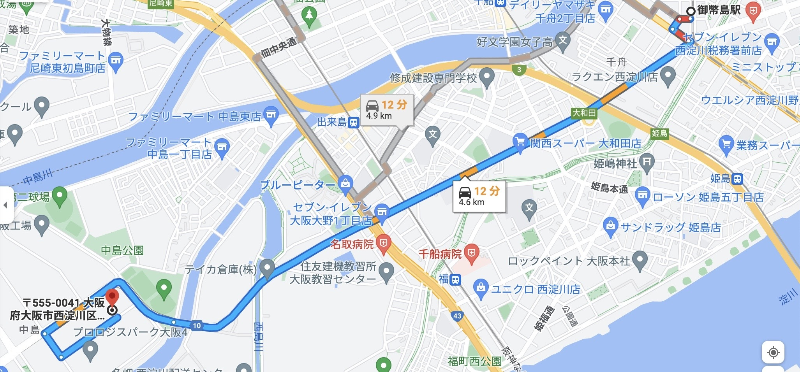
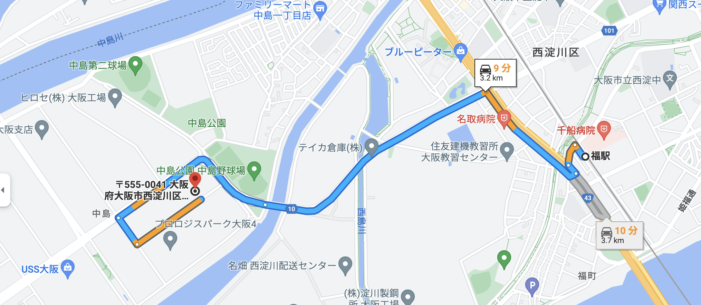

To brighten
your
happiness
あなたの幸せを輝かせるために！
企業名
株式会社 to・you （トゥ・ユー）
私たちは、お客様のために、共に働く仲間のために、「笑顔」になれる何かを追求するための会社です。
具体的なサービスとしては、
1 インターネットサイトの構築（HTML/CSS/JavaScriptなどの言語で開発するフロントエンド系のサイト）
2 tiktokerの動画コンテンツ販売、写真素材、グッズ作成、プロモーション活動、広告宣伝などのマーケティング活動
3 アプリケーション開発(Ruby on railsによるデータベースを備えたサイト構築 ＋ API / Python などによる、ユーザーを楽しませるWebアプリケーションの開発)
を主軸に、その時々で、お客様の要望に応じたシステム開発により、収益を得ています。
企業情報
企業理念
お客様のために、共に働く仲間のために、「笑顔」を追求することです。
周囲の人が笑顔になれるシステムを提案したり、お客様の要望にお応えできる開発を
進めていけるような人材が、to_youには必要です。
会社概要
| 名称 | 株式会社 to_you |
|---|---|
| 代表 | to_you |
| 代表電話番号 | 06-0606-0606 |
| FAX番号 | 06-0707-0707 |
| 資本金 | 500万 |
| 所在地（本社） | 〒555-0041 大阪府大阪市西淀川区中島２丁目２−４５(仮) |
アクセス

JR御幣島駅→本拠所在地

なんば線 福駅→本拠所在地
事業内容
Great job 🎉
×You've just displayed this awesome Modal Window!
Let's enjoy learning JavaScript ☺️
今までのサイト（別ページへ）
<%= link_to '楽天の書籍検索APIを用いたブックレビューサイト myfavorites ', 'https://bookreview20220205.herokuapp.com/', class: "text-decoration-none" %>